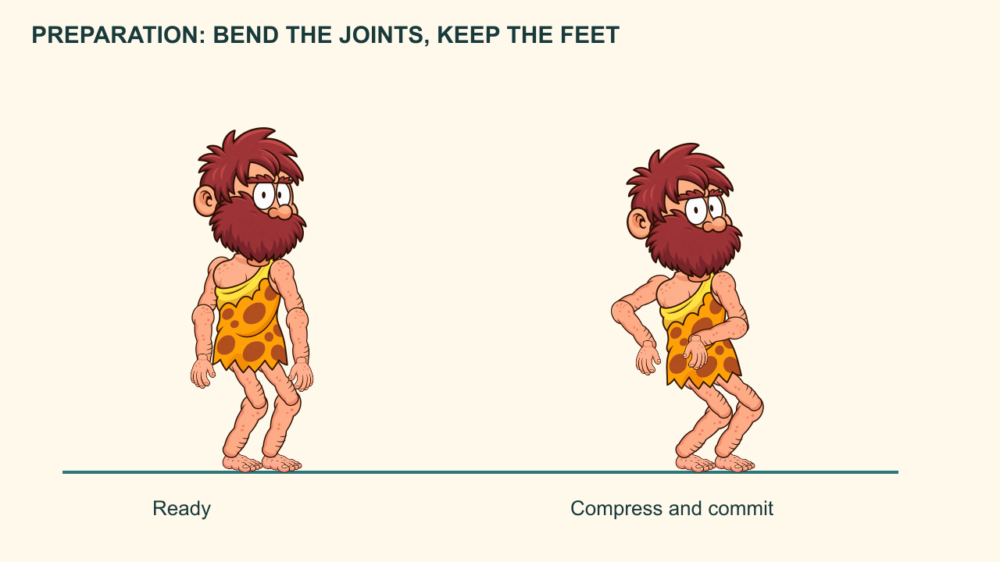
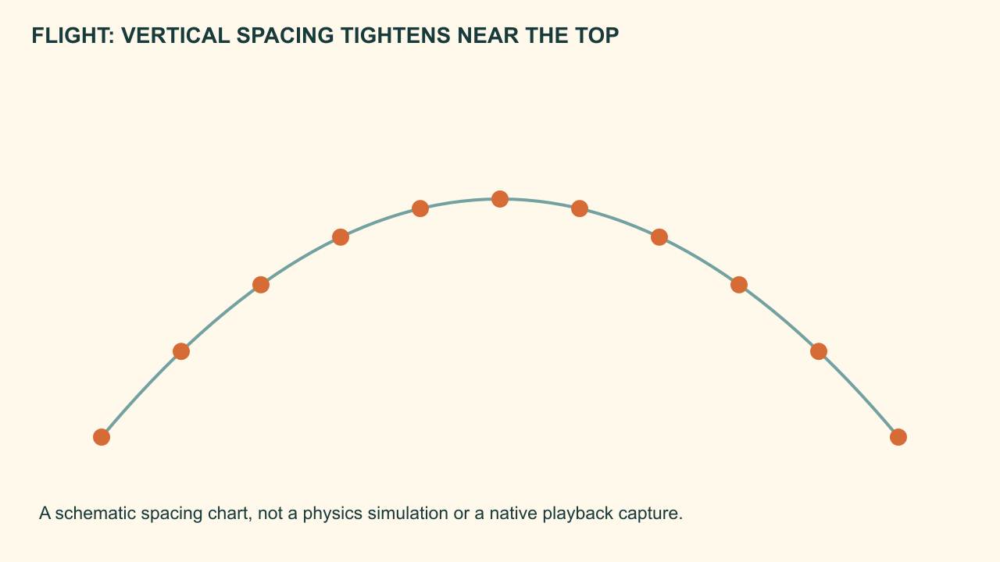
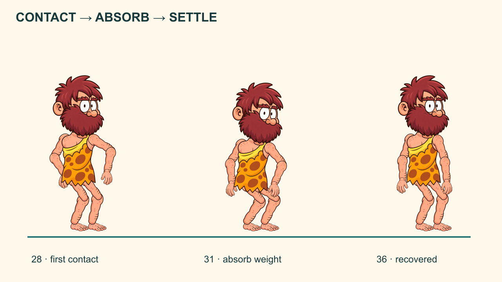

Jump phase studies: preparation, extension, flight, contact and recovery.
The Caveman and the Third Stone
Animate a full jump with readable weight and a controlled landing.
Workbook 5 of 8 · two provisional sessions
My supports
Turn on any help you want. Your teacher may have set some for you. They change how the guide helps, not what is assessed.
Continue the same film
Open your selected production FLA from Workbook 04, then File → Save As → Caveman_05_jump.fla. Carry forward all three Scenes and the entire Library. Keep repair/director copies separate, then return to the chosen production version. Do not begin a fresh blank project.
Your production job
Animate a full jump with readable weight and a controlled landing.
Notes and checked stages stay in this browser when storage is available. They are not submitted, graded or shared with school apps. Read aloud uses the browser voice; teacher recordings have not been supplied.
Restore uses the JSON recovery file from this workbook. The readable text file is for review only. Download before changing device. Keep personal information out of practice notes.
How animators work
Block the meaning, test the action, refine the transition and keep a revision trail. A smooth result still needs readable intention, believable contact and a clear delivery.
Understand before you move
The jump is a change in support: grounded preparation, flight, impact and recovery. The pose and spacing must explain each phase.
Use a provisional 36-frame action: anticipation at 1 and 9; take-off at 12; apex near 19; first landing near 28; settle by 36. These are authored teaching timings, not cues from the old 105-frame lip-sync test. The root travels along an arc while body parts change pose. Uniform easing over the whole jump does not model these phases.
Predict the result of today’s main action, then test that prediction in Animate.
Evidence of understanding
We look for the finished action, an observed repair and a brief explanation using your own timeline.
Independent director condition: The stream is wider. Keep the character and goal, then revise anticipation, travel, flight timing and landing reach. Do not stretch the entire picture horizontally.
Defence: Show the take-off, apex and first-contact frames and explain one spacing decision.
Support settings help access the same task. They do not lower the success criteria. School outcome/assessment registration remains for the teacher to confirm.
Session 1 · Lesson 1
Build and understand
Provisional 70-minute session: a short explanation, four guided stages, then a check. Actual classroom timing needs a cold run.
TODAYAnimate a full jump with readable weight and a controlled landing.
01
Plan contact, flight and landing
IN SHORTThe body clears the stream and lands on the far bank with feet directed toward the ground.
READ ALOUD
DOCUMENT: Caveman story · Workbook 05 · main Scene or named action as stated below SELECT: Jump planning strip and a new Jump_36 Graphic. TOOLS / ROUTE: Guide layer; timeline labels or notes; held pose keys.
Mark the near-bank take-off and far-bank landing points on the stream background. Draw a root/hip arc above them.
Block standing at 1, deepest anticipation at 9, extended take-off at 12, apex at 19, first landing at 28 and recovered stance at 36.
Keep the first version stepped. Check that the landing point is reachable and that the intended take-off direction is clear.
STEP CHECKLIST
GLOSSARY
root: A chosen overall body reference, often near the hips.
apex: The highest point of the flight path.
WHYThe action needs a destination and a sequence of support states before it needs smooth movement.
CHECKThe body clears the stream and lands on the far bank with feet directed toward the ground.
FIXIf the jump appears vertical, increase forward travel and revise the torso lean and leg extension toward the destination.
WORKED EXAMPLE · DIFFERENT OBJECTA thrown ball needs a launch point, flight path and destination before its in-betweens are placed.
STRETCH (AFTER THE CHECK PASSES)Design a low athletic jump and a high cautious jump as stepped strips.
Method basis: A1 · A2. Values and sequence are authored for this project.
02
Build the anticipation as compression
IN SHORTThe crouch has bent joints, grounded feet and a clear forward intention.
READ ALOUD
DOCUMENT: Caveman story · Workbook 05 · main Scene or named action as stated below SELECT: Jump_36 frames 1 and 9; all articulated body layers. TOOLS / ROUTE: Insert Keyframe; Free Transform; ground guide.
At frame 9 bend knees and hips, lean the torso toward the destination and move arms back. Keep both feet planted.
Lower the hips by posing the legs, not merely scaling the whole Caveman shorter. Keep the head looking where he will land.
Use tighter spacing near the deepest crouch if you want a brief commitment before release.
STEP CHECKLIST
GLOSSARY
compression: A pose in which the body folds to prepare or absorb force.
anticipation: The preparation before the main action.

Preparation through bent joints, with feet retained on the ground plane.
WHYAnticipation stores visual energy and makes the direction of the coming action readable.
CHECKThe crouch has bent joints, grounded feet and a clear forward intention.
FIXIf the soles lift during the crouch, reposition the hips and knees while preserving foot positions. Reduce the crouch if the rig cannot maintain believable proportions.
WORKED EXAMPLE · DIFFERENT OBJECTA spring compresses before release; a human jump prepares through joints and weight shift.
STRETCH (AFTER THE CHECK PASSES)Compare a quick dip with a longer uncertain preparation.
Method basis: A1 · A2. Values and sequence are authored for this project.
03
Design take-off, an in-flight breakdown and the apex key
IN SHORTThere is a visible change from compressed to extended to gathered, with no disconnected joints.
READ ALOUD
DOCUMENT: Caveman story · Workbook 05 · main Scene or named action as stated below SELECT: Jump_36 frames 12, 16 and 19. TOOLS / ROUTE: Pose keys; Onion Skin; joint repositioning.
At take-off extend hips, knees and ankles toward the jump direction. Let the arms swing through to support the action.
At frame 16 design an in-flight breakdown between take-off and the apex key: gather the knees and choose the arm path while keeping clear silhouettes. At the frame 19 apex key, show the top-of-flight pose and its different support state.
Keep limb lengths consistent. The frame 16 breakdown decides the transition; the apex remains a key. Neither role is defined by being an automatic midpoint.
STEP CHECKLIST
GLOSSARY
extension: Opening the joints into a longer pose.
flight breakdown: A designed in-air pose defining how take-off connects to landing.
WHYThe flight pose tells the audience how the character gets across, while take-off explains the launch.
CHECKThere is a visible change from compressed to extended to gathered, with no disconnected joints.
FIXIf the body looks like a stiff sticker, change the torso angle, knee bend and arm relationship across these phases.
WORKED EXAMPLE · DIFFERENT OBJECTA frog extends at launch and gathers its legs during flight rather than keeping one pose throughout.
STRETCH (AFTER THE CHECK PASSES)Let the head lag slightly after take-off, then lead toward the landing.
Method basis: A1 · A2. Values and sequence are authored for this project.
04
Space the root along the arc
IN SHORTThe jump rises and falls smoothly, slows vertically near the top and does not hover accidentally.
READ ALOUD
DOCUMENT: Caveman story · Workbook 05 · main Scene or named action as stated below SELECT: Root/whole action placement through frames 12–28. TOOLS / ROUTE: Inside Jump_36, select all fourteen part-layer keys together for the root offset; keep the outer Stage instance fixed. Guide arc; frame-by-frame preview.
Build the root travel inside Jump_36 by moving all fourteen part-layer poses together at each designed frame. Keep its outer Crossing instance fixed during playback. Place intermediate root positions along the planned arc. Use smaller vertical changes near the apex and larger vertical changes during faster ascent/descent.
Keep forward travel reasonably consistent through flight unless your deliberate style calls for otherwise. Do not apply a single strong ease-in/ease-out to the entire jump.
At each important root position, repose limbs as required. Inspect the trajectory in context with the stream banks.
STEP CHECKLIST
GLOSSARY
trajectory: The path of an object or body through space.
spacing chart: A plan showing successive positions along a path.

Schematic trajectory study: vertical displacement per frame becomes smaller near the apex. Not a physics simulation.
WHYTiming controls flight duration; spacing communicates changing speed. The body also changes shape while following the path.
CHECKThe jump rises and falls smoothly, slows vertically near the top and does not hover accidentally.
FIXIf the path makes a sharp corner, move the intermediate root point onto a continuous curve. If the landing floats, diagnose a pause or slow descent: reduce an unintended hold, increase downward position spacing toward impact where appropriate, and correct the actual contact pose.
WORKED EXAMPLE · DIFFERENT OBJECTA ball moves only a little vertically near its apex but much farther per frame lower in its arc.
STRETCH (AFTER THE CHECK PASSES)Keep the same arc but change flight duration and describe the change in apparent weight.
Method basis: A1 · A2. Values and sequence are authored for this project.
Session 2 · Lesson 2
Refine, repair and direct
Provisional 70-minute session: a short explanation, four guided stages, then a check. Actual classroom timing needs a cold run.
TODAYAnimate a full jump with readable weight and a controlled landing.
05
Absorb the landing, then settle
IN SHORTThe contact foot stays grounded, the body compresses after contact and the recovery decreases in size.
READ ALOUD
DOCUMENT: Caveman story · Workbook 05 · main Scene or named action as stated below SELECT: Frames 28, 31 and 36; feet and hips visible. TOOLS / ROUTE: Insert Keyframe; Free Transform; contact guide.
At first contact, place the leading foot on the far bank. At 31 bend knees and hips to absorb the landing; keep the contact foot fixed.
Let the torso and arms continue slightly past their final pose, then recover by 36 with a smaller movement.
Use restrained squash/stretch only as an optional accent. Preserve apparent body volume and facial readability; joint posing must still explain the landing.
STEP CHECKLIST
GLOSSARY
squash and stretch: Controlled shape change that suggests force and flexibility while preserving apparent volume.
overshoot and settle: A small pass beyond rest followed by decreasing recovery.

First contact, absorption and decreasing recovery are separate pose jobs.
WHYImpact requires a response. A straight-legged frozen landing removes weight and can look painful.
CHECKThe contact foot stays grounded, the body compresses after contact and the recovery decreases in size.
FIXIf the Caveman bounces repeatedly, reduce the overshoot and number of recovery keys. If he sinks through the bank, restore contact before adjusting the torso.
WORKED EXAMPLE · DIFFERENT OBJECTA soft ball compresses at impact; a heavy box may show its impact through a brief recoil and a strong stop instead.
STRETCH (AFTER THE CHECK PASSES)Make a heavy landing without enlarging the character’s head or changing its identity.
Method basis: A1 · A2. Values and sequence are authored for this project.
06
Connect the jump to retrieving the stone
IN SHORTThe stone remains on the bank until contact and stays held afterward.
READ ALOUD
DOCUMENT: Caveman story · Workbook 05 · main Scene or named action as stated below SELECT: A named 36-frame Pickup Graphic after the settled landing; stone contact separate from body parts. TOOLS / ROUTE: New pickup pose keys; hand and prop contact.
Create a 36-frame Graphic named Pickup from the character template. Match local frame 1 to the settled jump pose. Bend through knees/hips and reach the hand to the stone; use local frame 25 as the worked grasp cue, then lift and recover by 36.
Keep the bank stone on the main Props layer until the grasp. At Pickup local 25 (Crossing 145 in the worked map), blank the bank copy and reveal a stone inside Pickup aligned to the hand. From then on animate that carried copy with the hand. Avoid displaying both copies.
Finish with a clear held-stone pose that supports the later cut back to the cave.
STEP CHECKLIST
GLOSSARY
contact frame: The precise frame at which two elements first meet.
continuity of props: Keeping an object’s location and ownership understandable.
WHYThe jump serves the story goal. Retrieval proves the action achieved something.
CHECKThe stone remains on the bank until contact and stays held afterward.
FIXIf the stone moves before the hand reaches it, move the prop key to the actual grasp frame. If it slides in the hand, inspect their relative positions.
WORKED EXAMPLE · DIFFERENT OBJECTA cup remains on a table until the fingers contact it, then follows the lift.
STRETCH (AFTER THE CHECK PASSES)Add a brief effort pose before lifting a heavier-looking stone.
Method basis: A1 · A2. Values and sequence are authored for this project.
07
Repair a weightless jump
IN SHORTThe repair shows phase changes and a grounded landing; the explanation cites visible frames.
READ ALOUD
DOCUMENT: Caveman story · Workbook 05 · main Scene or named action as stated below SELECT: A duplicate using one unchanged body pose along a straight line. TOOLS / ROUTE: Compare playback; restore designed keys and arc.
Play the deliberately poor version. Identify two causes: an unchanged pose, missing anticipation, uniform spacing, no arc or an unabsorbed landing.
Repair those two causes without adding decorative effects. Keep a before/after pose strip.
Explain which change improves intention and which improves weight.
STEP CHECKLIST
GLOSSARY
weight: The impression of mass created by timing, pose, support and response to force.
WHYPrinciples are tools for diagnosing an action, not labels to add after it is finished.
CHECKThe repair shows phase changes and a grounded landing; the explanation cites visible frames.
FIXIf the result is only smoother, return to the held keys and strengthen the support changes.
WORKED EXAMPLE · DIFFERENT OBJECTA bowling ball and a balloon can follow similar routes but require very different spacing and recovery.
STRETCH (AFTER THE CHECK PASSES)Reduce the number of keys while keeping all four support phases readable.
Method basis: A1 · A2. Values and sequence are authored for this project.
08
Direct the wider-stream version
IN SHORTThe character clears the changed obstacle and retains believable support and proportion.
READ ALOUD
DOCUMENT: Caveman story · Workbook 05 · main Scene or named action as stated below SELECT: Your independent Jump_Wide Graphic and matching background staging. TOOLS / ROUTE: Duplicate action; revise keys, travel and timing.
Widen the gap by an amount your character can plausibly clear. Revise the preparation, flight route and landing pose together.
Keep a labelled anticipation key, take-off key, flight breakdown, first-contact key and settle. Add intentional in-betweens.
Save and reopen. Show the two versions and defend one timing or spacing decision. Choose the version that belongs in the film.
STEP CHECKLIST
GLOSSARY
exaggeration: A purposeful amplification that makes an idea clearer while preserving its logic.
WHYA new distance requires a new movement solution and an explanation of the trade-off.
CHECKThe character clears the changed obstacle and retains believable support and proportion.
FIXIf you need impossible reach, revise the staging or introduce a deliberate stylized exaggeration and justify it; do not silently stretch anatomy.
WORKED EXAMPLE · DIFFERENT OBJECTIndependent task: use the same support and arc criteria; no wider-gap pose solution is supplied.
STRETCH (AFTER THE CHECK PASSES)Make the wider jump feel risky without adding extra dialogue.
Method basis: A1 · A2. Values and sequence are authored for this project.
Before you submit
Student QA.
Evidence conversation
Keep it short and specific.
SENTENCE FRAMES
At frame ___, I chose ___ so the viewer could ___. The problem was caused by ___. I changed ___ and checked ___. Under the changed condition, I revised ___ because ___.
Figures marked Illustration are drawn, not screenshots. Step values are starting points authored for this project. Draft for teacher review; not yet classroom-piloted.